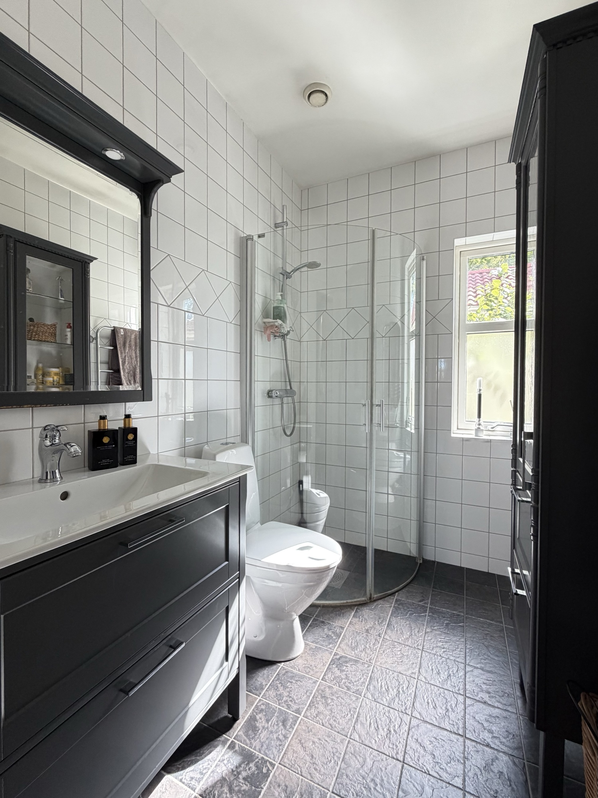
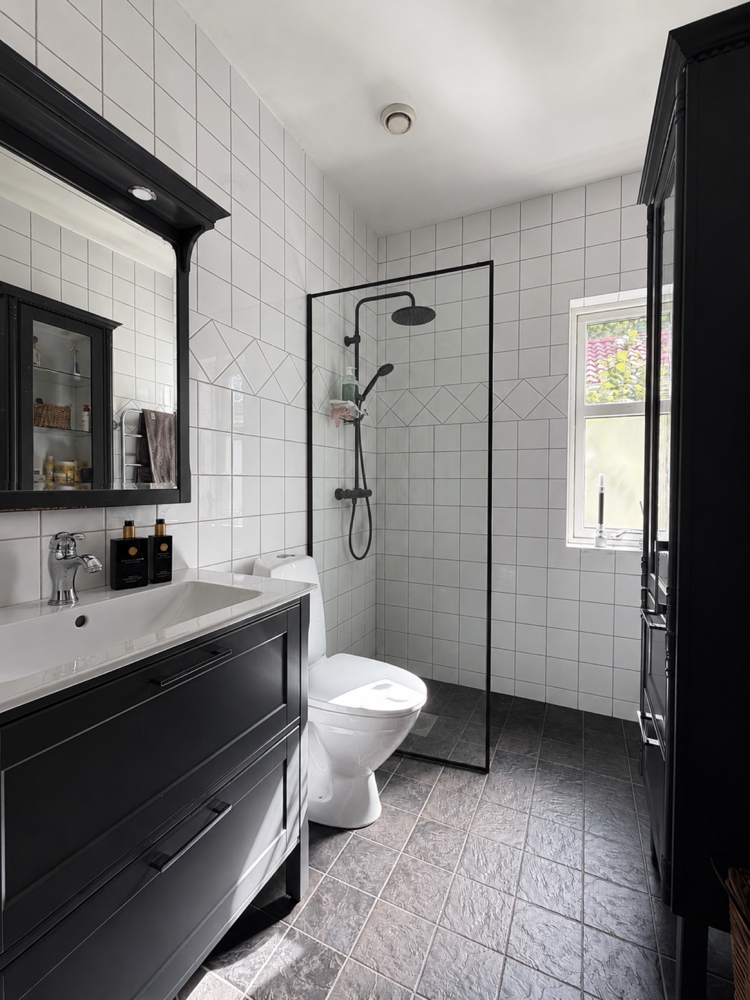
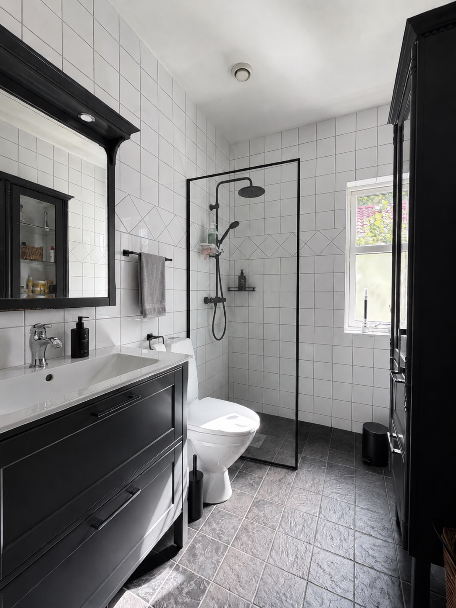
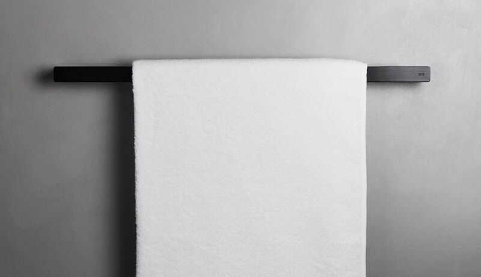
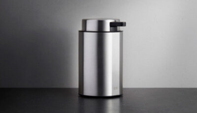
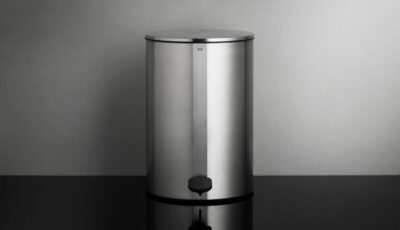
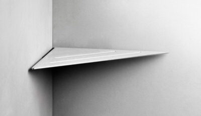
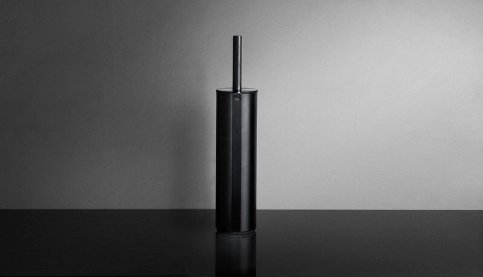
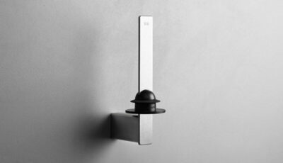
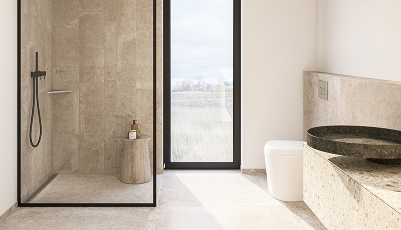

Du bad om att få se hur vi tänker oss förvandlingen. Här är rummet, och två nivåer att ta det till.


Det du sa om att väva ihop den svarta serien med den svarta panelen på golvbrunnen är precis rätt tänkt. Det är därifrån det här är byggt.
Rummet är smalt. Duschen står i hörnet och är det första man ser när dörren öppnas, så det är där ett byte märks mest.
Vi har delat upp det i två nivåer, eftersom de kräver olika mycket av ett badrum. Ingenting här är låst.
Reframe Collection · svart
Det här är nivån du själv beskrev på mötet: någonting vem som helst kan köpa utan att göra ett stort ingrepp i badrummet. Inget rivs, ingenting gjuts om. Tillbehören byts, och rummet läser om sig självt.
Det är också den nivå som är sann för det här huset just nu. Klinkern ligger kvar.


Handduksstång
Tvålpump
Pedalhink
Hörnhylla
Toalettborste
RullhållareGlassLine · svart ram
Duschen är rummets blickfång. Byts den rundade kromkabinen mot en rak glaspanel med smal svart kantprofil ändras hela intrycket, och golvbrunnen får sin självklara plats i samma formspråk.

Tillbaka till dig
Är det rätt produkter vi lyft fram?
Du känner sortimentet bättre än vi gör. Läser något fel vill vi veta det innan vi går vidare.
Hur vill du att vi hanterar duschväggen?
Vi kan hålla den som visionsbild, eller lägga hela tyngden på nivå 01. Din bedömning avgör.
Finns det något ni hellre vill se i fokus?
Säg bara till vad som skulle lyfta er kommunikation just nu, så bygger vi kring det istället.
När det passar dig, Johannes. Ett svar i tråden räcker gott.